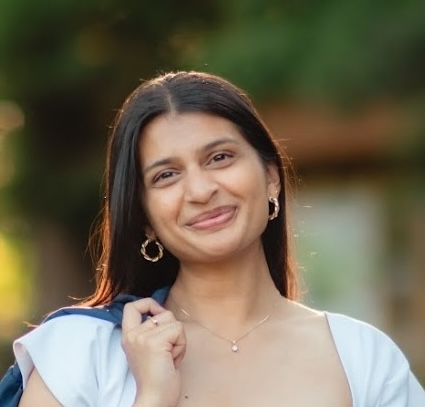

Maria Izzi
I'm interested in tech, people, and how the intersection creates meaningful constraint optimization problems. Tangentially, I'm interested in AI safety and security, VC, and religion. I currently engineer growth experiments at Netflix. Previously, I was at Duke, where I focused my studies on ML, statistics, and religion. I've worked on various research problems, including ML interpretability, hallucination detection, and behavioral neuroscience.